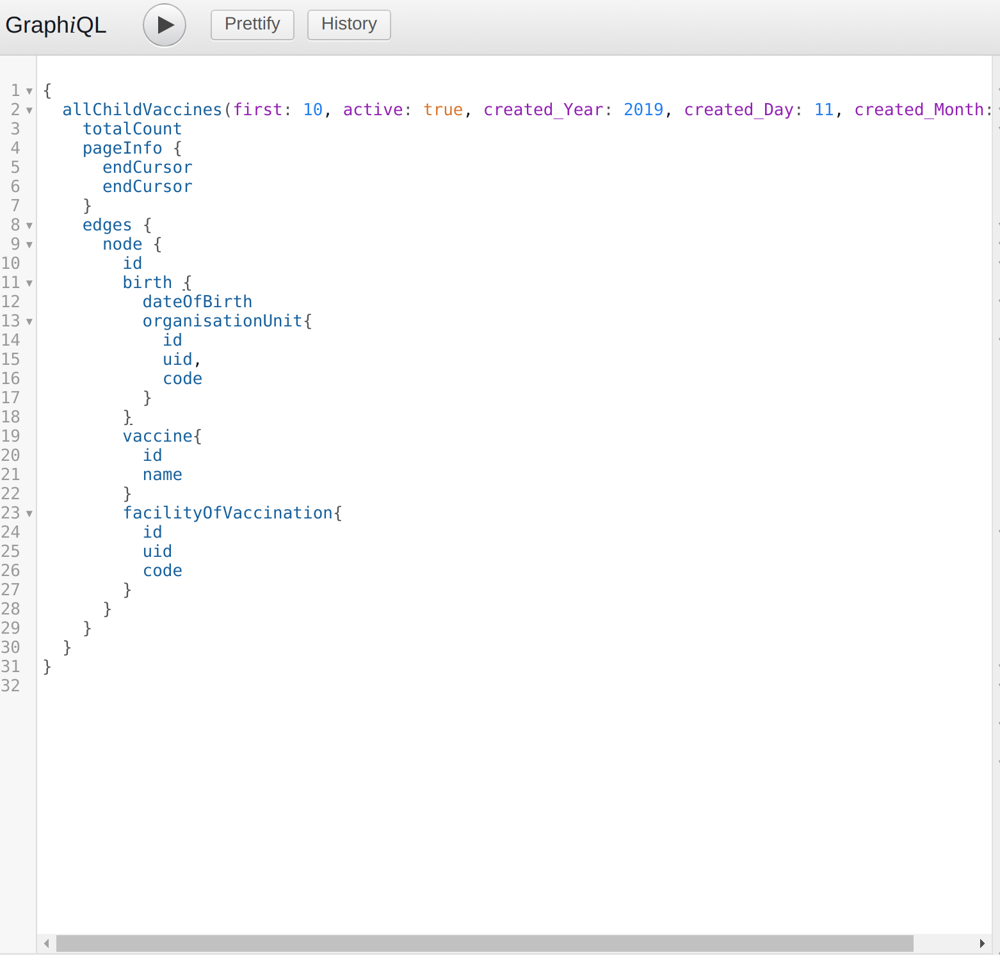

ChanjoTrack’s Technical Specifications.¶
ChanjoTrack is made up of two systems that are integrated;
A USSD end for data capture.
A web based system for reports visualization and also acts as the USSD server
The system is currently hosted on a Linode cloud instance with the following specs:
Ubuntu 16.04 64 bit
4GB RAM
80 GB HDD
2 CPUs
Technology Stack¶
Python 3.6 with Django 1.11.9
React Material UI template for UI
PostgreSQL 10 for Database
GraphQL for API Development
The backend and the frontend are completely decoupled, in the sense that you can port a completely different front-end to the backend. The backend is purely Django and GraphQL whereas the current frontend is built on ReactJS. All connections between the frontend and the backend are via API calls.
Code Repositories¶
The codebase is hosted on Bitbucket on the following repository: https://bitbucket.org/fegati/vregistry
Sample API Access¶
Since the system is API driven and integration ready, our wise guess is that future developers will be more interested in knowing how to access the GraphQL API; The API endpoint is https://api.chanjotrack.org/evr/dev. An example payload for fetching child vaccines will look like this;
